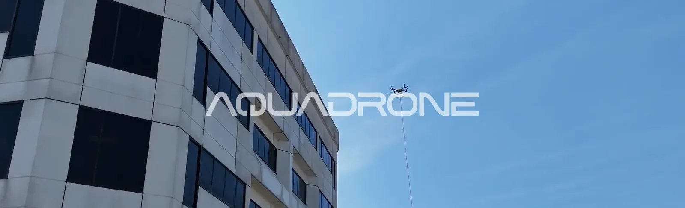

28/09/25
החשיבות בניקוי המבנה
ניקוי מבנים וחלונות בגובה באמצעות רחפן הוא הפתרון החכם לשמירה על חזית נקייה לאורך זמן. שירותי הניקוי של Aquadrone מאפשרים גישה לכל נקודה במבנה ללא פיגומים וללא סיכון. בהתאם לתקנות הבנייה בישראל, כל טיסותינו מבוצעות עם בבטיחות מרבית.
שמירה על חזית נקייה ומתוחזקת היא חלק בלתי נפרד מהתחזוקה הכוללת של מבנה. עם הזמן, גורמים סביבתיים כמו אבק, פיח, גשם חומצי וזיהום אוויר מצטברים על פני השטח, ולעיתים קרובות קשה לשים לב לשינויים עד שהנזק הופך לגלוי. סימן ראשון הוא הצטברות של אבק ופיח, בעיקר באזורים עירוניים ובקרבת כבישים ראשיים. סימן נוסף הוא הופעת כתמים כהים או ירקרקים המעידים לעיתים על התפתחות של עובש, אצות או לחות כלואה. דהיית צבע החיפוי, או זכוכית בעלת גוון עכור, מצביעה על שחיקה מתמשכת עקב קרני UV וזיהום. לעיתים גם הופעת נזילות פנימיות או רטיבויות בקירות מצביעה על כך שלכלוך חיצוני מפריע למערכות הניקוז או חודר אל תוך הסדקים. סימן חמישי, והנפוץ ביותר, הוא התחושה הכללית שהחזית ״עייפה״ – מבנה שאינו מתוחזק באופן רציף מקרין הזנחה גם מבלי שהבעיה תהיה נקודתית.
הנה כמה סיבות למה ניקוי המבנה צריך להיות חלק מהתפעול השוטף של הנכס שלך:
מניקוי פשוט לשיקום יקר — מה קורה כשהתחזוקה נדחית?
ככל שניקוי המבנה נדחה לאורך זמן, הלכלוך נעשה עקשן יותר, חודר לעומק החומר, נצמד למשטח בצורה קשה יותר להסרה ולעיתים אף גורם לנזק בלתי הפיך. עובש, לכלוך שומני ושכבות מזהמים שמצטברות לאורך חודשים ושנים עלולות לפגוע בציפוי החיצוני של המבנה, להביא להתפוררות מוקדמת של טיח, שחיקה של חיפויי אבן ואף חדירה של מים וסדקים. בנוסף, תהליך הניקוי עצמו נהיה ארוך, מורכב ויקר יותר ככל שהבעיה מוזנחת — מה שממחיש את החשיבות של תחזוקה מונעת וביצוע ניקוי תקופתי לפני שהנזק מתגבש.

סאם ריינולדס – מנהל אופרציה
״כשדוחים ניקוי – לא רק שהלכלוך מצטבר, אלא גם הנזק מתגבר. תחזוקה שוטפת באמצעות רחפנים היא הדרך החכמה לשמור על המבנה נקי, בריא ושומר ערך לאורך זמן״
הפתרון המודרני: ניקוי מבנים בגובה באמצעות רחפנים:
- ניקוי חזיתות בגובה בעזרת רחפנים הפך בשנים האחרונות לאלטרנטיבה יעילה, בטוחה ומדויקת לשיטות המסורתיות כמו סנפלינג או פיגומים. השיטה מבוססת על שילוב של טכנולוגיה אווירית מתקדמת עם מערכות לחץ מים מסונן, ומאפשרת ביצוע ניקוי גם במבנים גבוהים, מורכבים או כאלו שגובלים בשטחים ציבוריים צפופים. יתרונותיה המרכזיים של שיטה זו באים לידי ביטוי הן בהיבט התפעולי והן באיכות התוצאה:
- יגישה מלאה לחזיתות גבוהות וקשות־לגישה – ללא צורך במנופים, פיגומים או חבלי גלישה, מוזילה את עלות הטיפול .
- דיוק בביצוע – הרחפן מתוכנת ומופעל בצורה המאפשרת התזה אחידה של מים וסבון בכל שטח הקיר.
- שימוש במים רכים – המונעים היווצרות כתמי אבנית על זכוכיות וחיפויים רגישים.
- ביצוע בטיחותי לחלוטין – אין צורך בהעלאת צוותים לגובה או בהשבתת אזורים בסביבת המבנה.
- חיסכון בזמן ומשאבים – תהליך הניקוי מהיר יותר ונעשה בעזרת צוות קטן וציוד ממוקד.
רוצים להשוות בין השיטות? במדריך המלא שלנו השווינו בין רחפן, סנפלינג ובמת הרמה לצורך שטיפת מבנים בגובה.
לפרטים נוספים על ניקוי מבנים וחלונות בגובה באמצעות רחפן בקרו בעמוד שירותי ניקוי המבנים המסחריים שלנו.